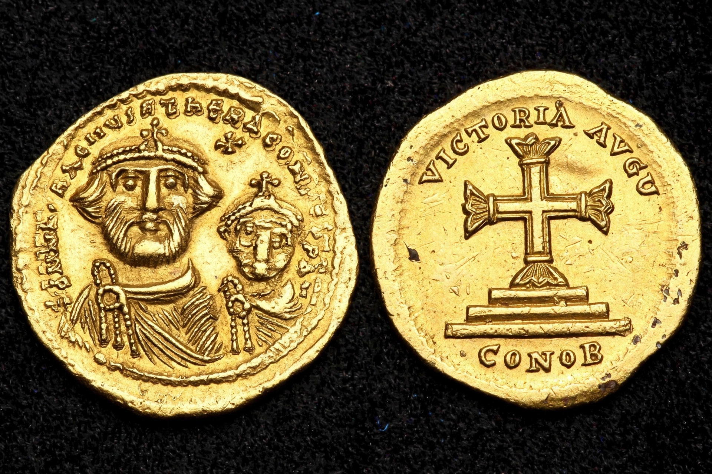

| Heraclius | |
|---|---|
| Reign | 5 October 610 – 11 February 641 |
| Predecessor | Phocas |
| Successor | Constantine III and Heraclonas |
| Born | c. 575, Cappadocia |
| Died | 641, Constantinople |

Heraclius (c. 575 – 11 February 641) was Byzantine emperor from 610 to 641. His reign saw the empire lose Syria, Palestine and Egypt to Persia, then recover them in a dramatic counter-offensive, only to lose the Levant and Egypt again to the early Muslim conquests.
Son of the exarch of Africa, Heraclius sailed to Constantinople and overthrew the unpopular Phocas in 610. The Sasanian king Khosrow II overran the eastern provinces and in 626 Persian and Avar forces besieged Constantinople itself. Heraclius personally campaigned deep into Mesopotamia, winning the Battle of Nineveh (627) and precipitating Khosrow's overthrow; the True Cross, captured from Jerusalem, was restored in 629/630.
Heraclius made Greek the empire's official language, adopted the title basileus, and is associated — debated by historians — with the theme system of military districts.
Exhausted by the Persian war, Byzantine armies were defeated by Arab forces under commanders such as Khalid ibn al-Walid at Yarmouk (636); Syria, Palestine and, by his death, Egypt were falling away. His attempts at religious compromise (Monoenergism, Monothelitism) failed to reconcile Chalcedonian and Miaphysite Christians.